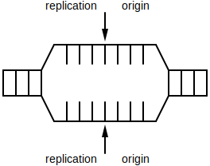
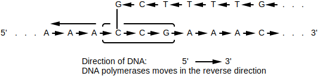
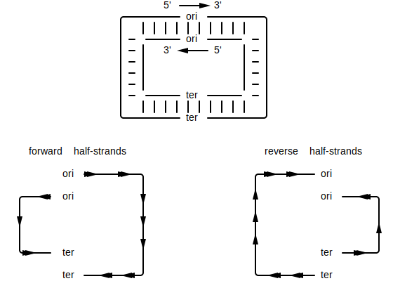
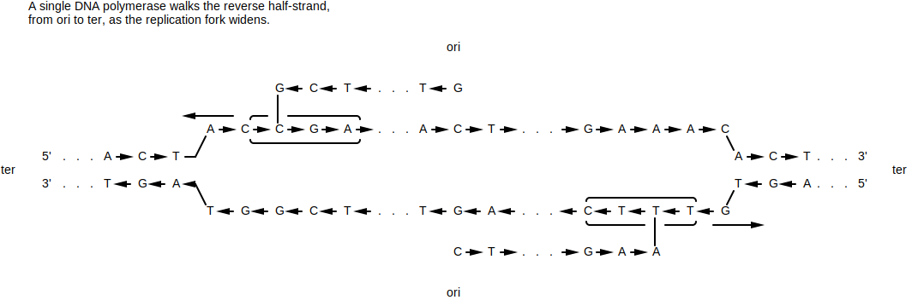
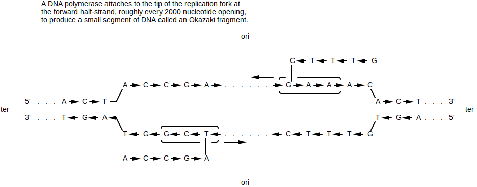
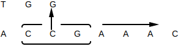

A k-mer is a subsequence of length k within some larger biological sequence (e.g. DNA or amino acid chain). For example, in the DNA sequence GAAATC, the following k-mer's exist:
| k | k-mers |
|---|---|
| 1 | G A A A T C |
| 2 | GA AA AA AT TC |
| 3 | GAA AAA AAT ATC |
| 4 | GAAA AAAT AATC |
| 5 | GAAAT AAATC |
| 6 | GAAATC |
Often times we'll need to either...
Given a DNA k-mer, calculate its reverse complement.
def reverse_complement(strand: str):
ret = ''
for i in range(0, len(strand)):
base = strand[i]
if base == 'A' or base == 'a':
base = 'T'
elif base == 'T' or base == 't':
base = 'A'
elif base == 'C' or base == 'c':
base = 'G'
elif base == 'G' or base == 'g':
base = 'C'
else:
raise Exception('Unexpected base: ' + base)
ret += base
return ret[::-1]Original: TAATCCG
Reverse Complement: CGGATTA
Depending on the type of biological sequence, a k-mer may have one or more alternatives. For DNA sequences specifically, a k-mer of interest may have an alternate form. Since DNA sequences come in 2 strands, where ...
, ... the reverse complement of that k-mer may be just as valid as the original k-mer. For example, if an enzyme is known to bind to a specific DNA k-mer, it's possible that it might also bind to the reverse complement of that k-mer.
Given a k-mer, find where that k-mer occurs in some larger sequence.
def find_kmer_locations(sequence: str, kmer: str) -> List[int]:
k = len(kmer)
idxes = []
for i in range(0, len(sequence) - k):
if sequence[i:i + k] == kmer:
idxes.append(i)
return idxesFound AC in ACTGAACCTTACACTTAAAGGAGATGATGATTCAAAT at index [0, 5, 10, 12]
Imagine that you know of a specific k-mer pattern that serves some function in an organism. If you see that same k-mer pattern appearing in some other related organism, it could be a sign that that k-mer pattern serves a similar function. For example, the same k-mer pattern could be used by 2 related types of bacteria as a DnaA box.
↩PREREQUISITES↩
Given a k-mer, find where that k-mer clusters in some larger sequence.
def find_kmer_clusters(sequence: str, kmer: str, min_occurrence_in_cluster: int, cluster_window_size: int) -> List[int]:
cluster_locs = []
locs = find_kmer_locations(sequence, kmer)
start_i = 0
occurrence_count = 1
for end_i in range(1, len(locs)):
if locs[end_i] - locs[start_i] < cluster_window_size: # within a cluster window?
occurrence_count += 1
else:
if occurrence_count >= min_occurrence_in_cluster: # did the last cluster meet the min ocurr requirement?
cluster_locs.append(locs[start_i])
start_i = end_i
occurrence_count = 1
return cluster_locsFound clusters of GGG (at least 3 occurrences in window of 13) in GGGACTGAACAAACAAATTTGGGAGGGCACGGGTTAAAGGAGATGATGATTCAAAGGGT at index [20]
An enzyme may need to bind to a specific region of DNA to begin doing its job. That is, it looks for a specific k-mer pattern to bind to, where that k-mer represents the beginning of some larger DNA region that it operates on. Since DNA is known to mutate, often times you'll find multiple copies of the same k-mer pattern clustered together -- if one copy mutated to become unusable, the other copies are still around.
For example, the DnaA box in bacteria can be found repeating multiple times in the ori region.
Given a sequence, count how many times each unique k-mer in that sequence occurs.
def kmer_frequency(data: str, k: int) -> Counter[str]:
counter = Counter()
for i in range(0, len(data) - k):
pattern = data[i:i+k]
counter[pattern] += 1
return counter4-mer frequencies for AAAACAAAAAGAAAAAAT:
From past experiments, you know that a specific region of genome clusters a certain pattern. The pattern is different for each organism, but you know that it's there.
↩PREREQUISITES↩
def find_clustered_kmers(sequence: str, k: int, min_occurrence_in_cluster: int, cluster_window_size: int) -> Dict[str, List[int]]:
# map kmer to indices
indices_lookup = dict()
for i in range(0, len(sequence) - k):
kmer = sequence[i:i + k]
if kmer not in indices_lookup:
indices_lookup[kmer] = []
indices_lookup[kmer].append(i)
# check to see if any remaining kmers sit within cluster_window_size
clumped_kmers = dict()
for (kmer, indices) in indices_lookup.items():
for i in range(0, len(indices) - min_occurrence_in_cluster + 1):
if indices[i + min_occurrence_in_cluster - 1] - indices[i] < cluster_window_size - k:
clumped_kmers[kmer] = indices
break
return clumped_kmersSearching GGGACTGAACAAACAAATTTGGGAGGGCACGGGTTAAAGGAGATGATGATTCAAAGGGT for clusters of 3-mer where at least 2 occurrences exist in window of 13
Found the following clusters:
Given a sequence, find clusters of unique k-mers within that sequence. In other words, for each unique k-mer that exists in the sequence, see if it clusters in the sequence.
An enzyme may need to bind to a specific region of DNA to begin doing its job. That is, it looks for a specific k-mer pattern to bind to, where that k-mer represents the beginning of some larger DNA region that it operates on. Since DNA is known to mutate, often times you'll find multiple copies of the same k-mer pattern clustered together -- if one copy mutated to become unusable, the other copies are still around.
For example, the DnaA box in bacteria can be found repeating multiple times in the ori region. If you don't know where the ori is, searching for clusters can give a list of potential locations.
Bacteria are known to have a single chromosome of circular / looping DNA. In this DNA, the replication origin (ori) is the region of DNA where replication starts, while the replication terminus (ter) is where replication ends.

The replication process begins by a replication fork opening at the ori. As replication happens, that fork widens up until the point it reaches ter.

DNA polymerases attach on to the forked strands and synthesize a strand of DNA with complementing bases.

The process of replication is different depending on the segment of DNA. That is, if you use ori and ter as cutting points, you'll have 4 different strands of DNA. Of those strands, if the directionality of the strand is going from ...

Since DNA polymerase can only walk over DNA in the reverse direction (3' to 5'), the 2 reverse half-strands will quickly get walked over in one shot. A primer gets attached to the ori, then a DNA polymerase attaches to that primer to begin synthesis of a new strand. Synthesis continues until the ter is reached...

For the forward half-strands, the process is much slower. Since DNA polymerase can only walk DNA in the reverse direction, the foreword half-strands get replicated in small segments. That is, as the replication fork continues to grow, every ~2000 nucleotides a new primer attaches to the end of the fork on the forward strands. A new DNA polymerase attaches to eacg primer and walks in the reverse direction (towards the ori) to synthesize a small segment of DNA. That small segment of DNA is called an Okazaki fragment...

TODO: FLESH THIS OUT BY TALKING ABOUT SKEW DIAGRAM
TODO: FLESH THIS OUT BY TALKING ABOUT SKEW DIAGRAM
TODO: FLESH THIS OUT BY TALKING ABOUT SKEW DIAGRAM
TODO: FLESH THIS OUT BY TALKING ABOUT SKEW DIAGRAM
TODO: FLESH THIS OUT BY TALKING ABOUT SKEW DIAGRAM
TODO: FLESH THIS OUT BY TALKING ABOUT SKEW DIAGRAM
TODO: FLESH THIS OUT BY TALKING ABOUT SKEW DIAGRAM
Within the ori region, several smaller regions exist known as DnaA boxes -- sequences that are either the same as or very similar to each other....

The DnaA protein binds to a DnaA box to activate the process of DNA replication. The reason why multiple DnaA box copies exist has to do with DNA mutation. If one of the copies mutates to a point where the DnaA protein doesn't bind to it, it can still bind to the other copies.
Through experiments, biologists have determined that DnaA boxes are typical 9-mers. Given that you know the where the ori of a specific bacterial organism is, you can search for 9-mer instances that may be similar to each other. Find a set of repeating 9-mers and group them if they're similar. Of the groups found, are any of them reverse complements of each other? If so, merge the groups together. These groups are are potential DnaA box candidates.
TODO: FLESH THIS OUT BY USING KMER ALGORITHMS
TODO: FLESH THIS OUT BY USING KMER ALGORITHMS
TODO: FLESH THIS OUT BY USING KMER ALGORITHMS
TODO: FLESH THIS OUT BY USING KMER ALGORITHMS
TODO: FLESH THIS OUT BY USING KMER ALGORITHMS
TODO: FLESH THIS OUT BY USING KMER ALGORITHMS
TODO: FLESH THIS OUT BY USING KMER ALGORITHMS
TODO: FLESH THIS OUT BY USING KMER ALGORITHMS
TODO: FLESH THIS OUT BY USING KMER ALGORITHMS
5' (5 prime) / 3' (3 prime) - 5' (5 prime) and 3' (3 prime) describe the opposite ends of DNA. The chemical structure at each end is what defines if it's 5' or 3' -- each end is guaranteed to be different from the other. The forward direction on DNA is defined as 5' to 3', while the backwards direction is 3' to 5'.
Two complementing DNA strands will always be attached in opposite directions.

DNA polymerase - An enzyme that replicates a strand of DNA. That is, DNA polymerase walks over a single strand of DNA bases (not the strand of base pairs) and generates a strand of complements. Before DNA polymerase can attach itself and start replicating DNA, it requires a primer.

DNA polymerase is unidirectional, meaning that it can only walk a DNA strand in one direction. That direction is backwards (3' to 5')
primer - A primer is a short strand of RNA that binds to some larger strand of DNA (single bases, not a strand of base pairs) and allows DNA synthesis to happen. That is, the primer acts as the entry point for special enzymes DNA polymerases. DNA polymerases bind to the primer to get access to the strand.
replication fork - The process of DNA replication requires that DNA's 2 complementing strands be unwound and split open. The area where the DNA starts to split is called the replication fork. In bacteria, the replication fork starts at the replication origin and keeps expanding until it reaches the replication terminus. Special enzymes called DNA polymerases walk over each unwound strand and create complementing strands.
replication origin (ori) - The point in DNA at which replication starts.
replication terminus (ter) - The point in DNA at which replication ends.
forward half-strand / reverse half-strand - Bacteria are known to have a single chromosome of circular / looping DNA. In this DNA, the replication origin (ori) is the region of DNA where replication starts, while the replication terminus (ter) is where replication ends.

If you split up the DNA based on ori and ter being cutting points, you end up with 4 distinct strands. Given that the direction of a strand is 5' to 3', if the direction of the strand starts at...
ori and ends at ter, it's called the forward half-strand.

ter and ends at ori, it's called the reverse half-strand.